Chapter 8 · Part 1 — One Star to Another
“Who was that guy?” said Jack. “What does his map mean?”
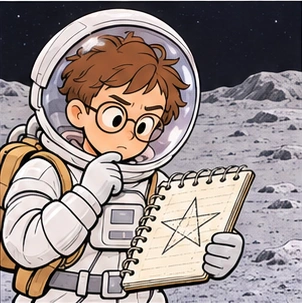
“I don’t know,” said Annie. “But let’s see if it works.”
Jack took a deep breath. “Yeah, we’d better hurry back. I think I’m running out of air. It feels harder to breathe.”
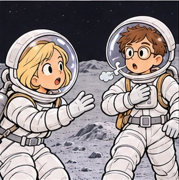
“For me, too,” said Annie.
“Go slow. Don’t breathe too much,” said Jack.
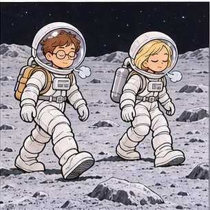
He and Annie took long, floating steps toward the moon base. Jack held his breath as if he were underwater.
By the time they got to the white , he was ready to burst.
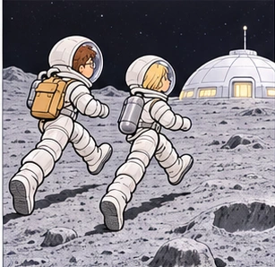
Annie pushed a button beside the huge door. It slid open. They hurried into the . The door closed behind them and the door to the hallway opened.
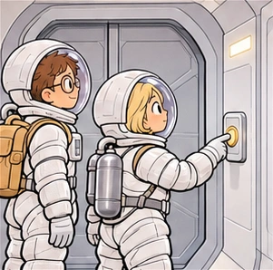
Jack opened the of his . He took a long, deep breath—and let it out. “Ahhhh!”
“Let’s get out of these suits,” said Annie.
“Good idea.” Jack was dying to free his arms and legs.
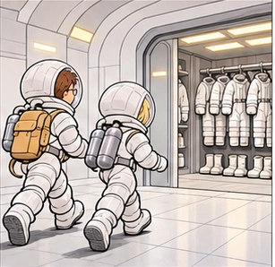
As they moved into the spacesuit storeroom, Jack felt heavy again.
He and Annie unlocked each other’s helmets, gloves, and boots, and pulled everything off. Then they stepped out of their suits.
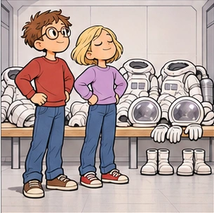
“Whew!” Jack said. He took off his glasses and his eyes.
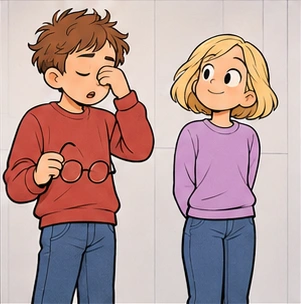
It was great to be free—even if he no longer felt as light as a feather.
“Hurry! Peanut’s waiting!” said Annie.
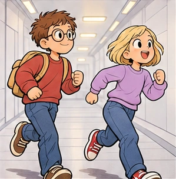
She led the way down the steps to the bright landing .
“Yay,” she said softly.
Jack was relieved to see the tree house still there. Soon they’d be heading home. He couldn’t wait.
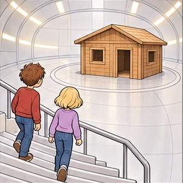
Jack and Annie crawled through the tree house window.
“We’re back, Peanut!” said Annie.
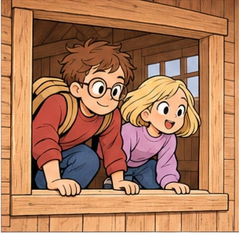
Squeak! Peanut ran to the letter M.
“We missed you!” said Annie. She patted the mouse’s head. “We met a moon man.”
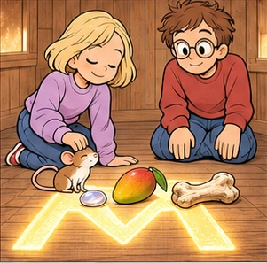
“Sorry, Peanut, but you have to move,” said Jack. “We have to put the map on the M.”
Annie gently lifted the mouse off the M.
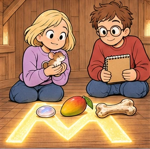
Jack tore the star map out of his notebook. He placed it on the M, next to the , the mango, and the .
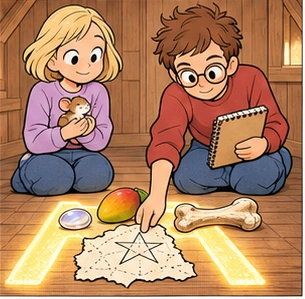